loading...
Paw Haus is a new entrant in the e-commerce space. It can’t compete on price with Shopee or Lazada nor with omnichannel pet suppliers, so I designed around the one thing those giants don’t offer. A proof that every product is safe for your specific pet.
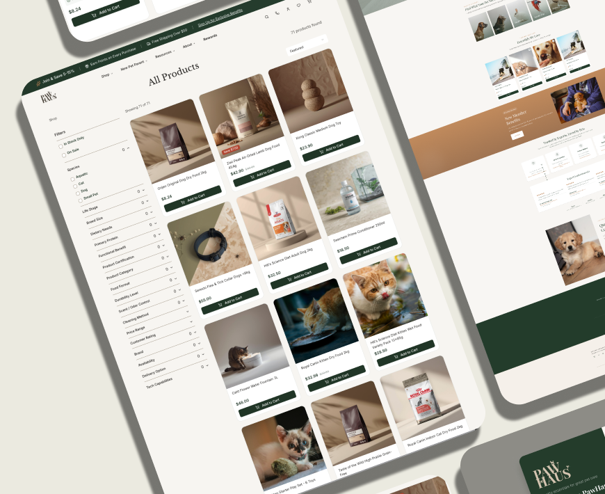
Solo UX Project
Self-initiated.
6 weeks (Oct - Dec 2025)
E-commerce
Paw Haus is a brand-new local store with no brand history and no ability to compete on price. The challenge was building enough trust for a first-time visitor to make a health-sensitive purchase from a store they’d never heard of, in a market where 92% of owners have pets with specialised health needs.
100% task success on finding safe food, 100% task success on the new owner starter kit, 4.8/5 trust rating in the starter kit task, 96% trust in recommendations. The one miss, a 20% on reordering from which I directly produced an iteration that moved the feature to where users actually expected it.
Solo end-to-end: market research, 12 interviews, card sort study, competitor analysis, IA, ideation, high-fidelity Figma prototype (desktop + mobile), usability testing across 3 tasks, and two rounds of iteration. No team — every decision from research brief to final pixel was yours.
12
pet owners interviewed
92% had pets with specialised health needs which became the core problem I needed to solve.
4
design moves built
Pet profile, trust signals, restock automation, new owner guidance.
100%
test success on safety
Every user found a product they felt fully confident was safe for their pet.
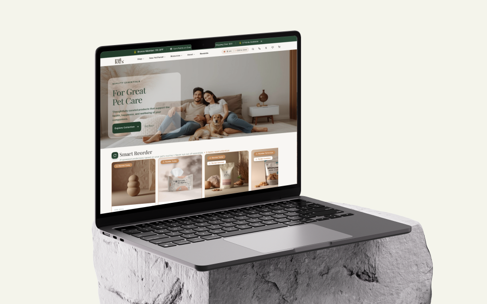
Paw Haus is entering a market with 20-plus competitors, including giants like Shopee, Lazada, and Pet Lovers Centre, with no physical store, no brand history, and no ability to compete on price. Their only edge is selling products the local pet community can actually trust. For this assigned brief, I designed the online store end-to-end, from research and information architecture through to high-fidelity prototype and usability testing.
860K
pets owned in Singapore
Up from 114K in 2019 — fast-growing market.
S$413M
in pet supplies sales
85% shop online; making strong case for launching an e-commerce line.
20+
direct competitors
From giant marketplaces to specialist pet stores.
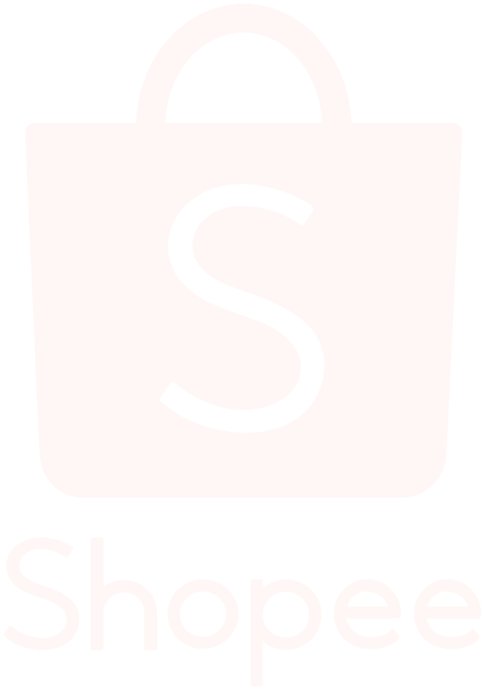
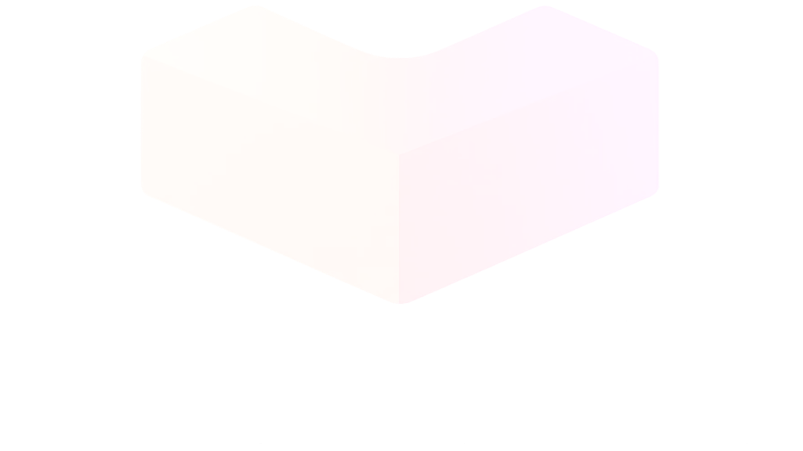
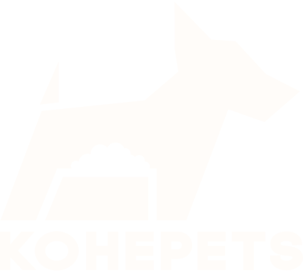
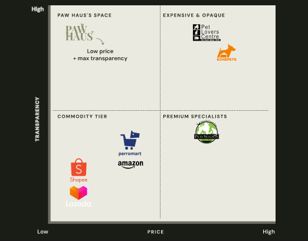
I ran interviews with 12 pet owners to understand how they shop and what gets in the way. The finding that drove everything else: 92% (11 of 12) had a pet with a specialised diet or health condition, most commonly a sensitive stomach or allergy. For them, the wrong product doesn’t mean a bad purchase. It means a sick pet.
Research participants snapshot
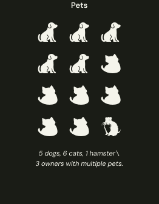
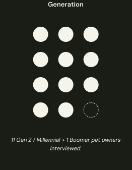
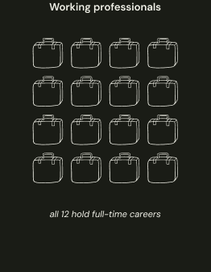
11 of 12
Health first, price second
Ingredients matter more than brand or deal to these owners, health is wealth.
9 of 12
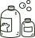
They need outside proof
Vet or community validation is essential, they won’t trust a store they don’t recognise.
10 of 12
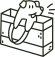
They shop with a target
They already know what they want. They’re not browsing — they don’t want to waste time.
7 of 12
Price tips the final decision
Store loyalty is low. A better deal elsewhere is the top reason carts get abandoned.
To decide how products should be organised on the site, I ran a card sort with 20 products spanning food, health, accessories, and devices, given to a separate pool of 15 participants from the interview pool.
The result was consistent: owners grouped products by pet type and function, not by brand. That single insight became the backbone of the site’s navigation rather than the brand-first structure most competitors use.
Research participants snapshot
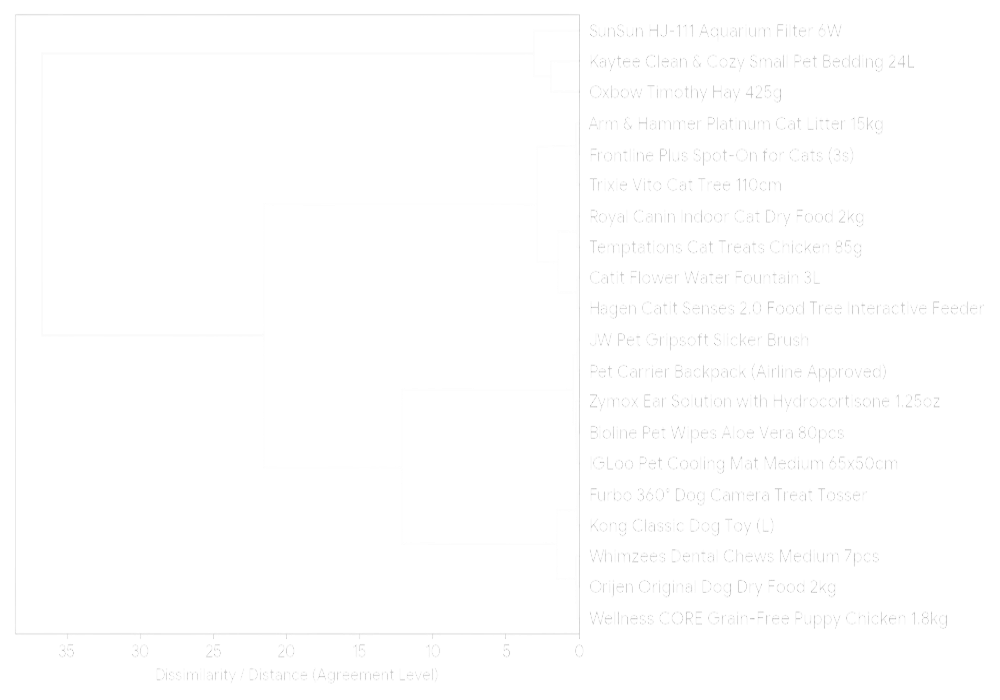
The 12 interviews clustered into three themes: Ingredient Anxiety, Navigation Friction, and Brand Trust. Two personas were created to embody those tensions and letting their situations anchor every design decision.
Affinity mapping
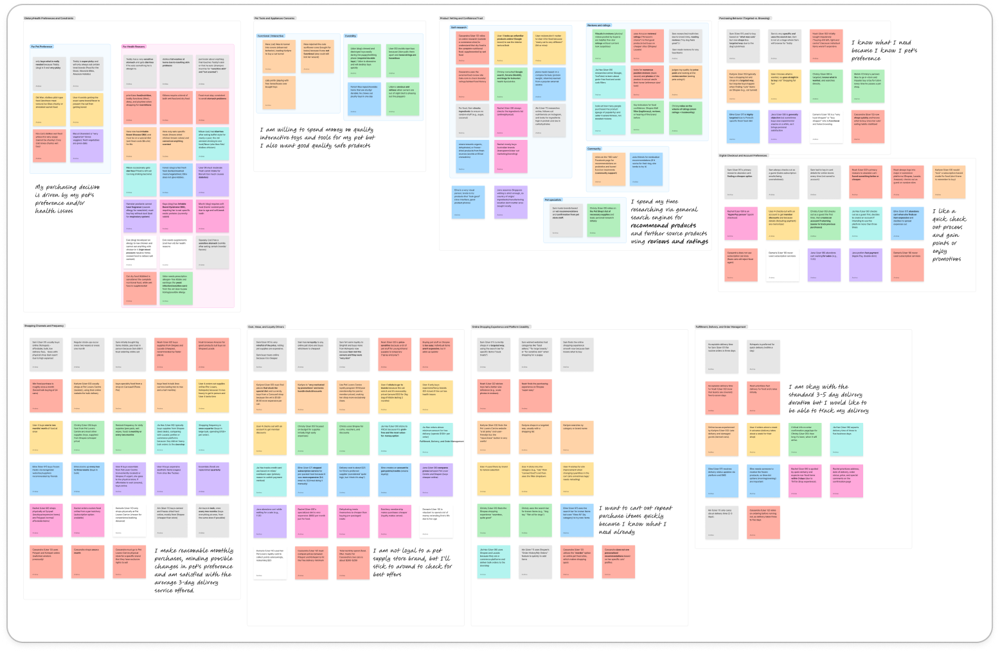
“I actually check the ingredients to make sure there’s not any random stuff I don’t understand. So for food, I 100% always check!”
Design question
How might we let Amy find safe products effortlessly, so she can stop manually vetting every label?
Amy’s dog Teddy was recently diagnosed with a beef allergy. Every purchase now means manually reading every label — exhausting, but non-negotiable. She shops on KohePets and Floof because they at least show ingredient lists, but still manually verifies every product before buying.
She Needs
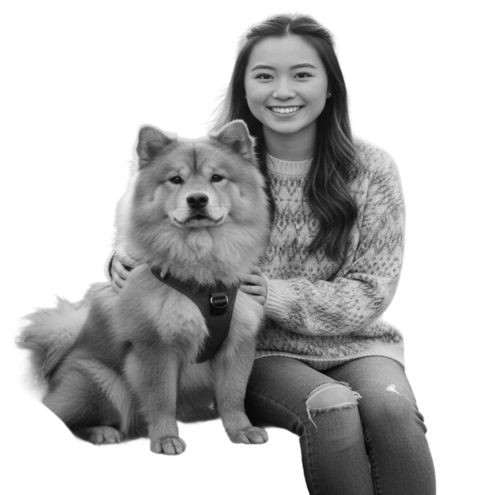
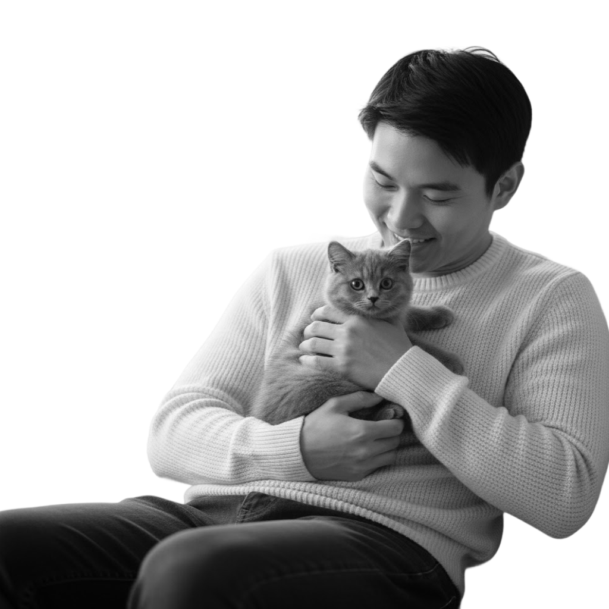
“If they’re young, it’s just spray and pray. You (over) buy things to see what they like. Most of it won’t get used. So I’m not willing to invest in high-quality products, …”
Design question
How might we give Victor a structured starting point, built on community consensus rather than the store’s word?
Victor just brought home Princess, an 8-week-old kitten. He has no idea what a new cat actually needs and trusts community reviews far more than any store recommendation — his fear is wasting money on things she’ll reject.
He Needs
The 12 interviews clustered into three themes: Ingredient Anxiety, Navigation Friction, and Brand Trust. Two personas were created to embody those tensions and letting their situations anchor every design decision.
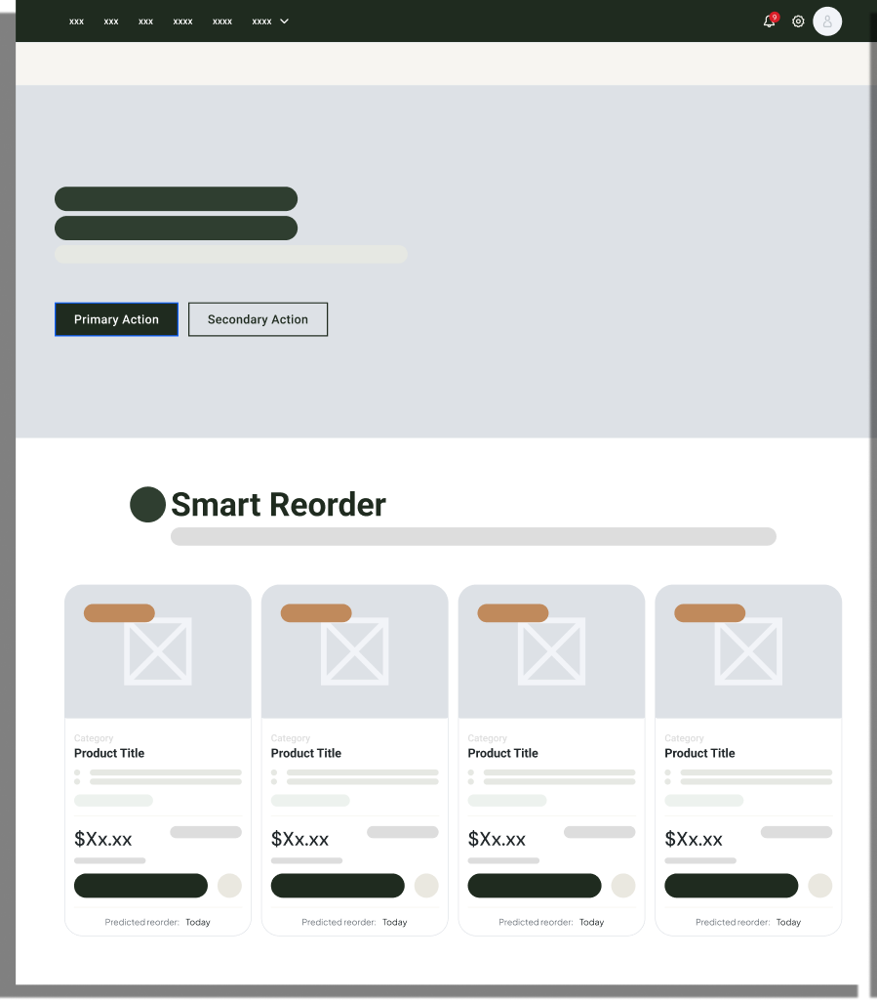
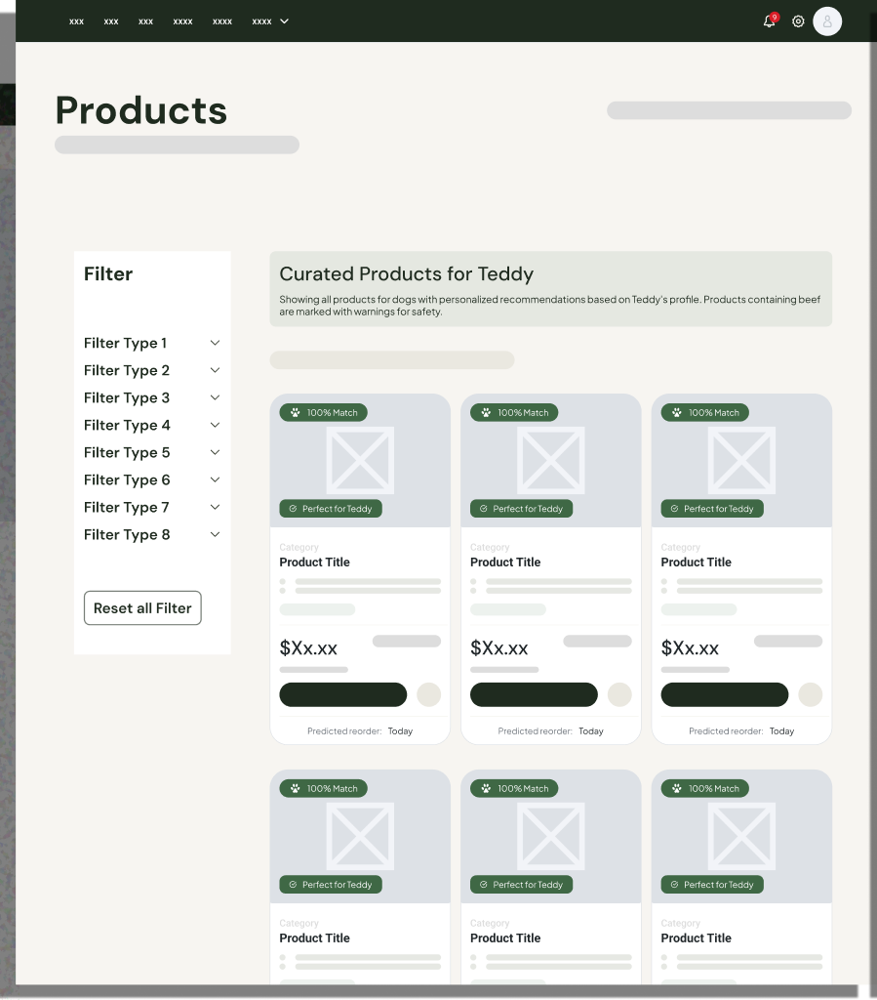
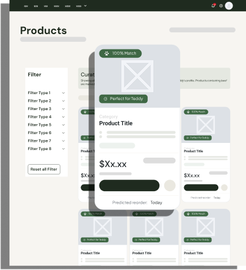
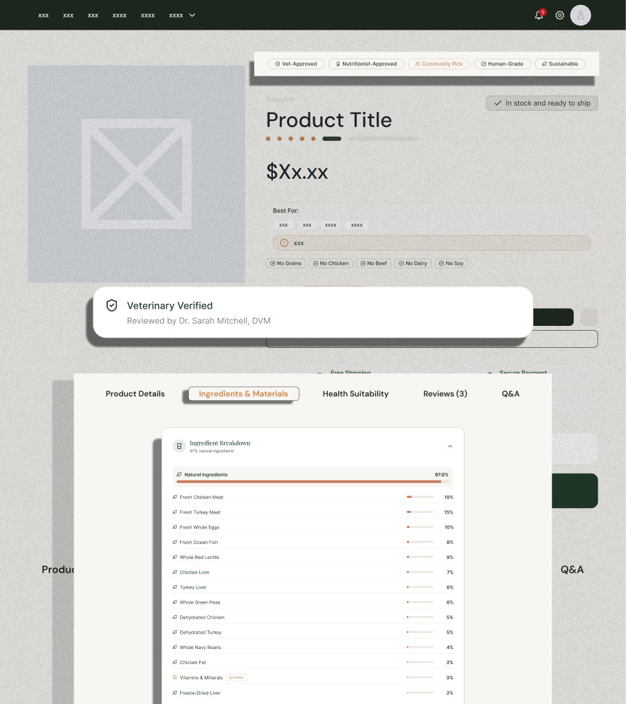
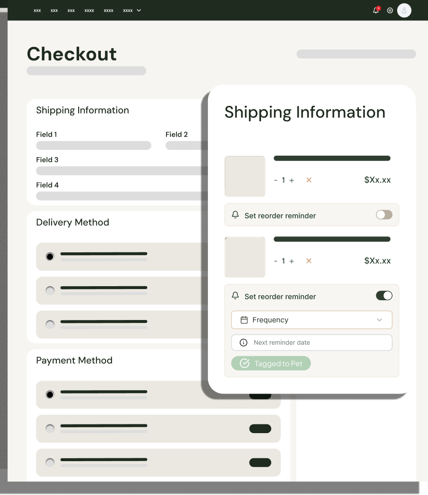
Homepage → Build Pet Profile → Filtered Product List → Product Tag → Product Detail (trust tags + ingredient breakdown) → Checkout with reorder reminder.
Hover a screen to bring it forward.
“How might we identify the right products based on a pet’s actual needs?”
On the initial visit, users create a profile for their pet (breed, age, and health conditions like a beef allergy). The entire catalogue is then automatically pre-filtered for that pet. As a returning user, you never have to re-enter your pet’s allergy. Every product listing has already been checked. The underlying structure follows the card sort finding directly: products are organised by pet type and function first, never by brand.
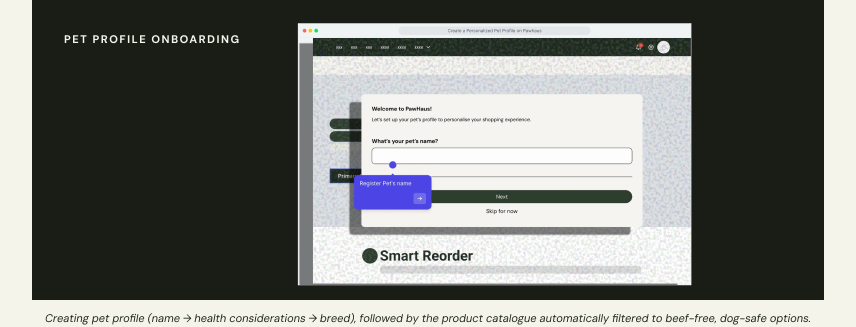
“How might we convey a product’s reliability without the user having to dig for it?”
Every product card carries a one-line verdict: “Perfect for Teddy” or “⚠ Not suitable, contains allergen: beef.” The homepage opens with expert endorsements and trust badges. The product page surfaces a full ingredient breakdown and a personalised allergen warning — no guesswork.
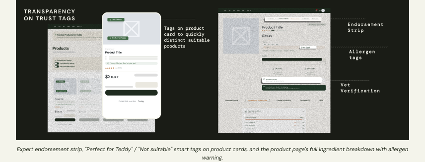
“How might we remove Amy’s need to re-check safe products every time she reorders?”
A “Time to Restock” module on the homepage predicts what’s running low based on past orders. Owners set a personalised reminder schedule at checkout. If a product Teddy already eats updates its recipe, a watchdog alert flags it immediately — so a previously-safe staple never quietly becomes a risk.
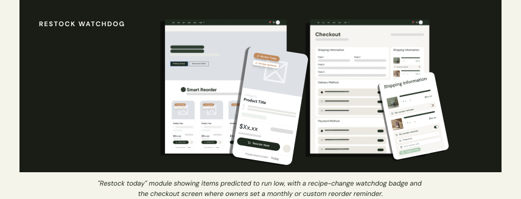
“How might we give Victor a structured, community-backed starting point?”
A dedicated “New Pet Parent” page in the nav offers a community-vetted Starter Kit — pre-selected essentials Victor can add to his cart in one go. Across the site, visible star ratings, review counts, and a “Community Pick” badge give him the social proof he trusts more than any store recommendation.
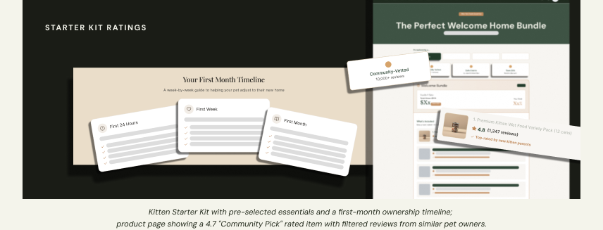
Open to UX design and research roles or freelancing service. If you’re building something complex that needs to feel simple particularly for social good — let’s talk!